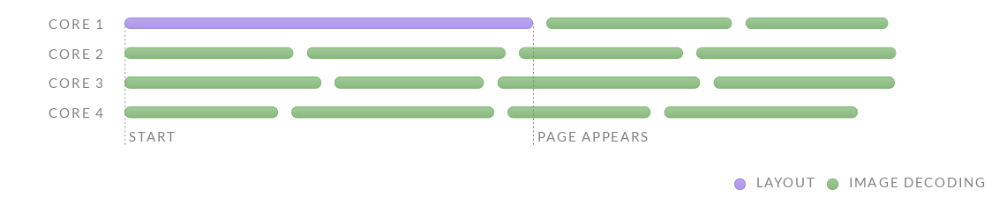
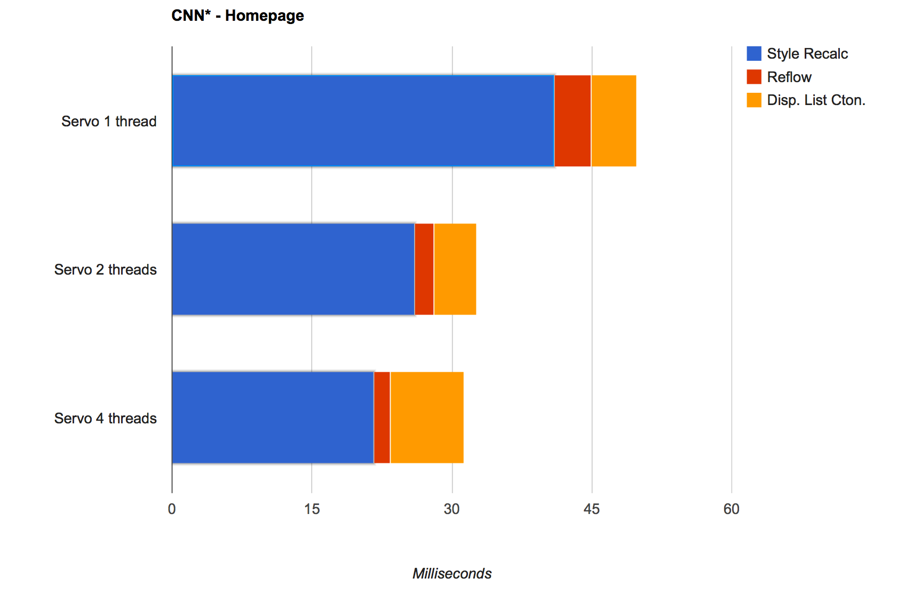
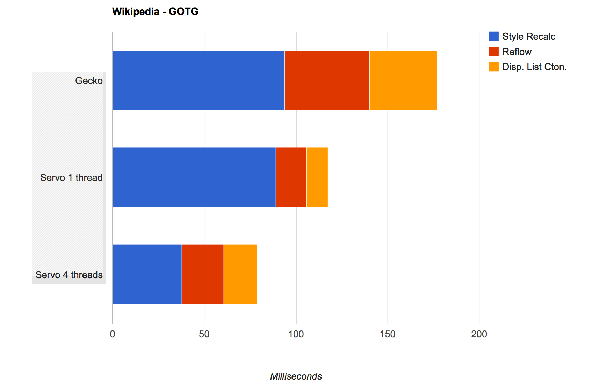
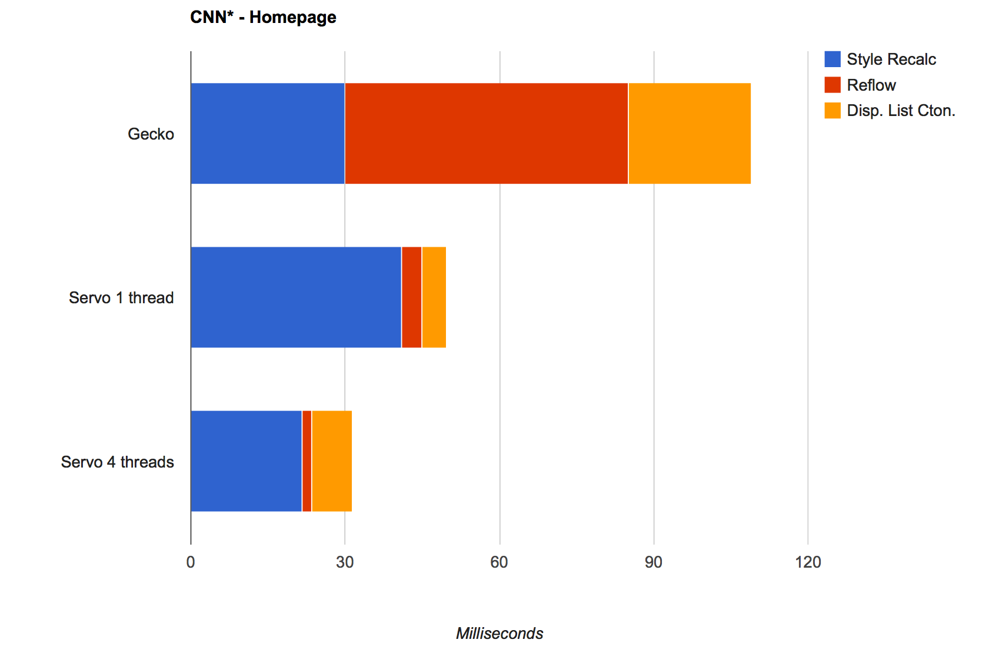
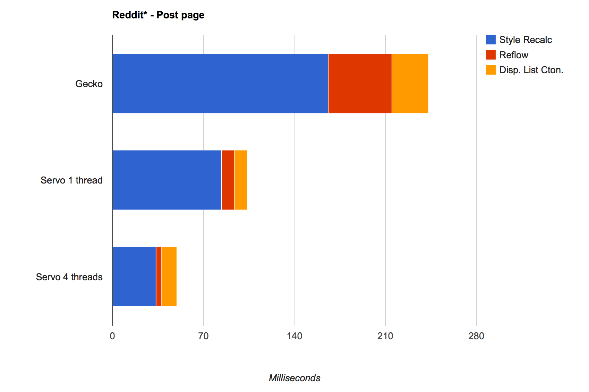
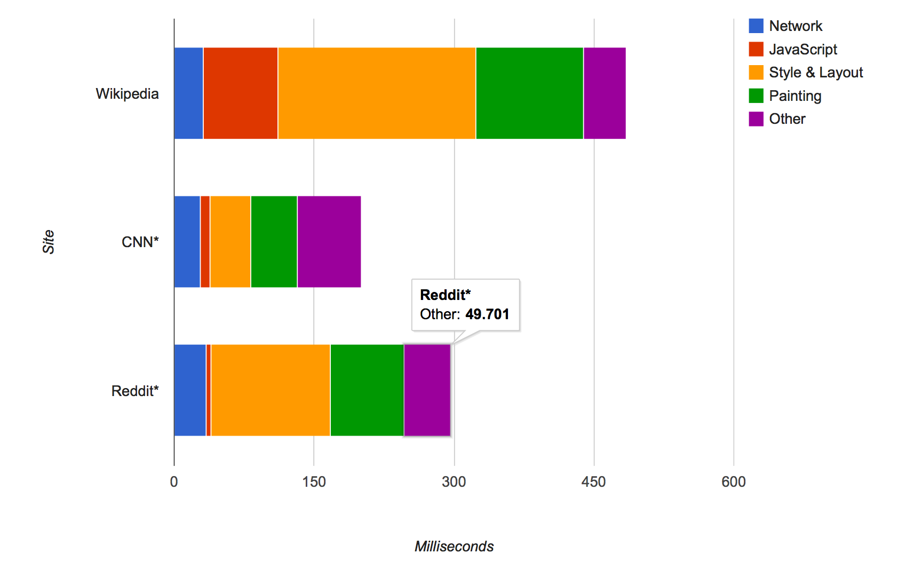

Servo: Building a Parallel Browser
Jack Moffitt
Mozilla Research
January 16, 2015
Goal: Create a new browser engine with a generational
leap in performance and robustness.
High level plan
- Figure out what is possible to achieve
- Build a product-ready engine
Why a new engine?
Existing engines are HUGE!
$ hg clone http://hg.mozilla.org/mozilla-central
$ cd mozilla-central
$ find . -name '*.c' -or -name '*.cpp' -or -name '*.h' -or -name '*.tbl' |
xargs wc -l | fgrep total | awk '{total = total + $1}END{print total}'
10127726
Path dependence
- Designed 20 years ago...
- ... for single processors
- ... for a utopian web
- ... and have accumulated things as they've adapted
C++ :(
- Modern browsers are all written in C++
- Most other HLL are not fast enough
- C++ is wildly unsafe
- Most browser security bugs are related to the C++ memory model
Rust
- Fast and safe
- Memory safety: no data races, automatic memory management
- Concurrency built in
- Other modern features: type inference, pattern matching, traits, etc
Performance
What does performance mean?
- Page load time
- JavaScript execution speed
- Responsiveness
- Power usage
Parallelize at every level
- Multiple processes (tabs, compositor, plugins, etc)
- Major systems in threads (media, network, caching, script, layout,
painting)
- Algorithmic parallelism (layout every node at once, GPU
painting)
- Data parallelism (SIMD)
Parallelism inside a page
Traditional best case

With parallel layout
Data parallel layout
DOM Layout
Parallel DOM Layout
Counterintuitive world
Robustness
What does robustness mean?
- Prevent security breaches
- Isolate failure
- Loosely couple components
- Prevent or tolerate programmer error
Robustness at every level
- Process isolation
- Sandboxing
- Memory safety
- Fail to compile when code is wrong
Example: WebAudio API
- 34 sec-critical bugs in WebAudio
- All were array index out of bounds or use after free
- All would be prevented by Rust
Current Status
Acid tests
Alexa Top Sites
Over 100 CSS features supported
- Recently landed: mix-blend-mode, filter, text-rendering,
outline-offset, word-break
- Landing soon: text-overflow, text-align: justify, CSS counters,
text-shadow, CSS 2D transforms, image-rendering, and more
- Should have all features used by 50% of web pages soon
Architectural progress
- Incremental layout
- Partial writing mode support
- Unification and safety of JS memory management
- Embeddable with Chromium Embedding Framework
- Android support
- Boot2Servo
Layout performance
Layout performance

Layout performance
Servo vs. Gecko

Servo vs. Gecko

Servo vs. Gecko

Timeline (net)
Timeline (local,nojs)

Power usage
- Running cores at lower voltage (disable turbo boost) loses 30% of
performance for 40% gain in power
- Servo can make up this performance and bridge the gap: similar
performance at 40% less power
Future Plans
- Some kind of alpha release in 2015
- Start landing Rust and Servo technology in Gecko
- More CSS features (pagination, flexbox, and popular things)
Servo needs you!
Jack Moffitt